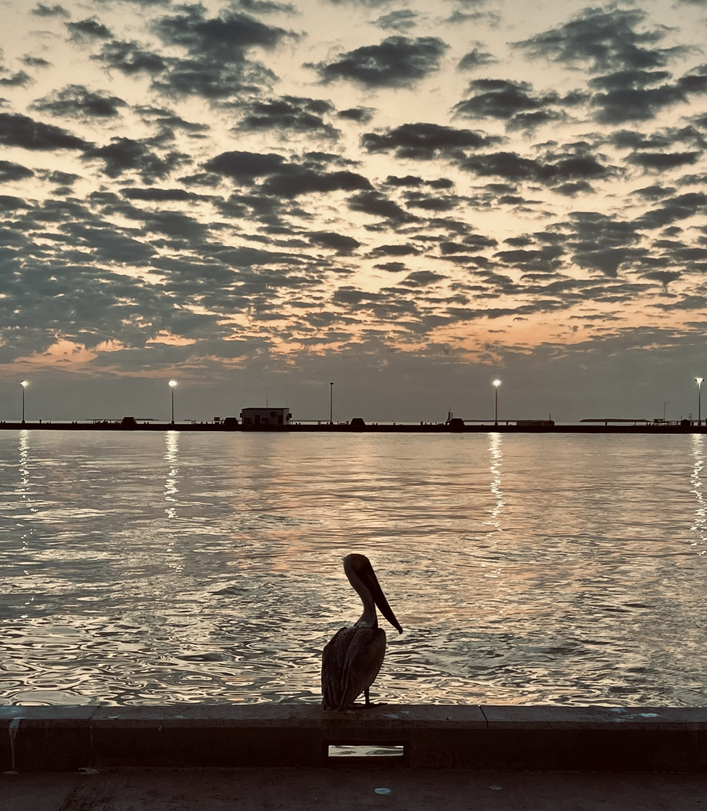
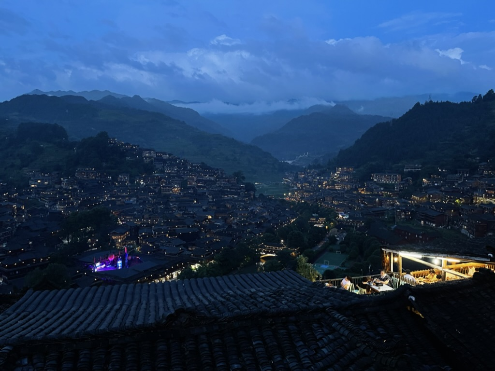

Welcome to My Website
Hello! I'm Changhong Ding, a first-year UMSI student at University of Michigan.
I spent my undergraduate period at College of Information Science and Technology, Pennsylvania State University, and gained my bachelor degree with Cum Laude Distinction.
I specialize in Information Science, and have a passion for HCI and XR.
I am interested in advancing XR accessibility by exploring inclusive design and human-centered research.
I also love to take photos when I find the scenes beautiful.
My home teams are Nittany Lions (We Are!) and Liverpool (You'll Never Walk Alone).
Feel free to browse through my projects, check out my resume, and get in touch!
Hi!
Photo Gallery

Key West Sunset

Guizhou Xijiang Thousand Family Miao Village